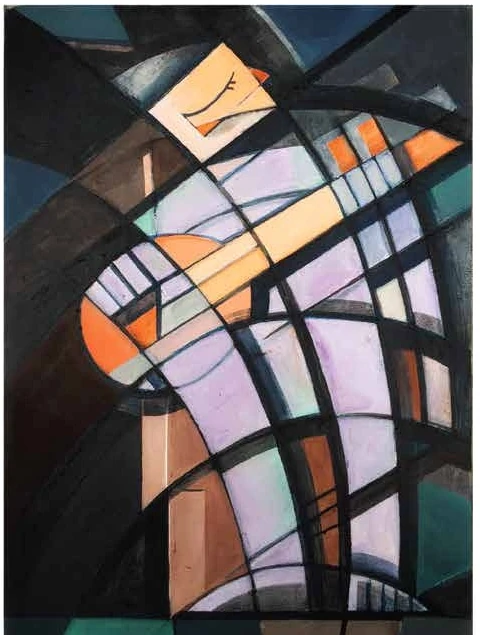
01
The Devotee
A figure is constructed through interlocking geometric planes, creating a sense of enclosure and inward concentration.
Artist Profile & Portfolio 2026
A cross-disciplinary practice connecting painting, drawing, digital image-making, lettering, caricature, visual communication and sculpture with themes of identity, cultural memory, resilience and public narrative.
London · Dhaka · International Practice
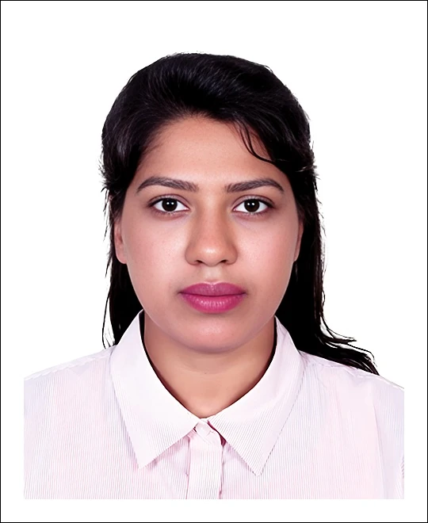
Practice
01 · About
Imrooz Shimu is a multidisciplinary visual artist, illustrator, designer and creative professional whose work moves between fine art and visual communication.
With experience across Bangladesh and the United Kingdom, Shimu combines studio practice with art direction, exhibition participation, illustration, print and digital design, and creative leadership. The selected exhibition history includes presentations in Birmingham and London, national exhibitions in Bangladesh, a virtual youth art festival in Seoul, and cross-cultural programmes linked with China and Bangladesh.
Shimu's practice explores identity, collective memory, resilience, cultural symbolism and the tension between personal experience and public history. Across acrylic painting, watercolor, ink, color pencil, digital media, typographic lettering and bronze, the work shifts between geometric abstraction, expressive portraiture and narrative image-making.
Recurrent visual strategies — fragmented structure, layered surfaces, dramatic contrast, culturally resonant motifs and hand-drawn marks — allow intimate emotions to sit beside wider social and historical references.
02 · Portfolio
Thirteen works across painting, digital media, drawing and sculpture. Select any work to view it larger with its full portfolio description.

A figure is constructed through interlocking geometric planes, creating a sense of enclosure and inward concentration.
Layered textures and subdued colour allow a face to emerge between portrait and erasure.
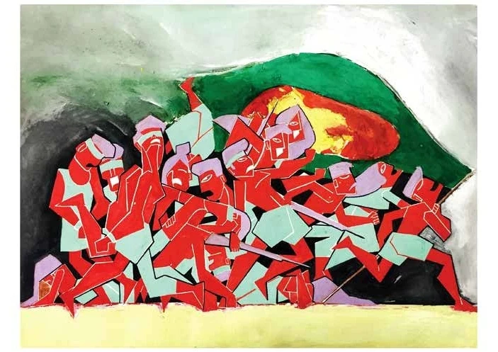
Angular figures and intense red passages condense struggle, solidarity and national remembrance.
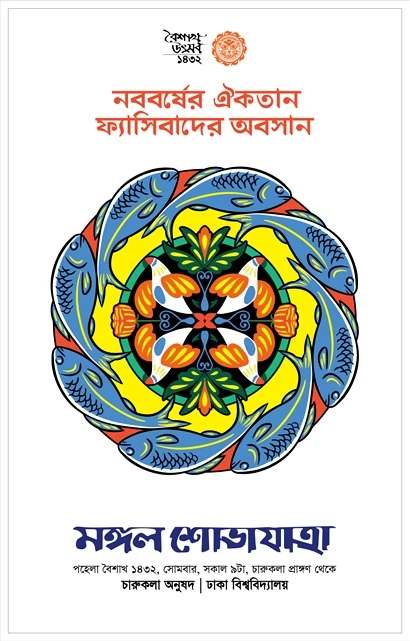
Folk-inspired motifs and a circular rhythm translate Bengali New Year celebration into contemporary poster language.
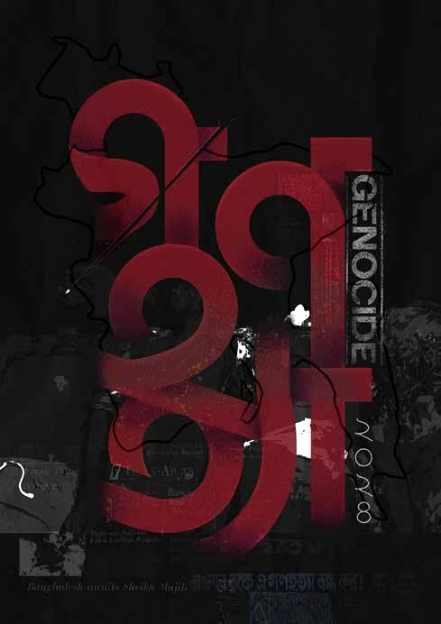
A restricted black-and-red palette turns typography into a field of protest and remembrance.
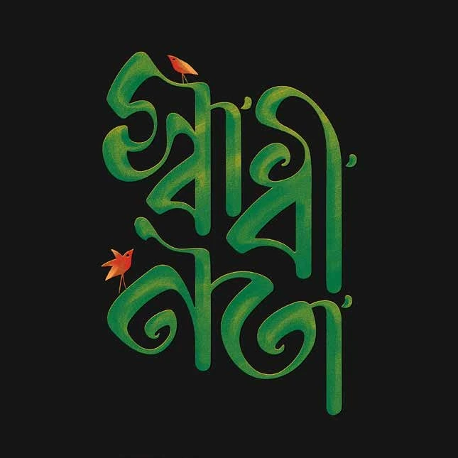
Bengali lettering becomes image, merging language, form and cultural association in one visual sign.
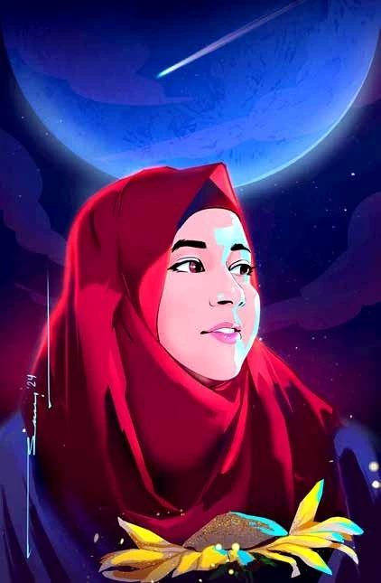
A luminous digital portrait shaped by saturated colour, resilience, aspiration and self-possession.
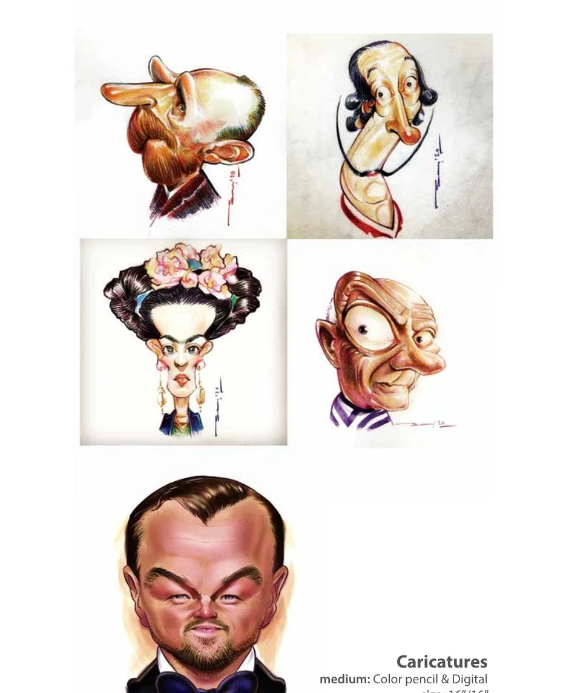
Playful, sharply observed character studies combining traditional colour pencil with digital finishing.
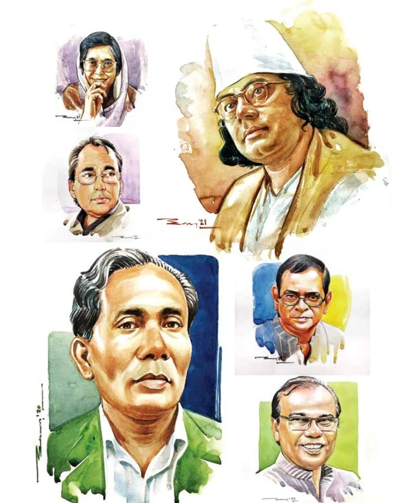
Watercolor studies balancing likeness, transparent washes, observation and the expressive economy of portraiture.
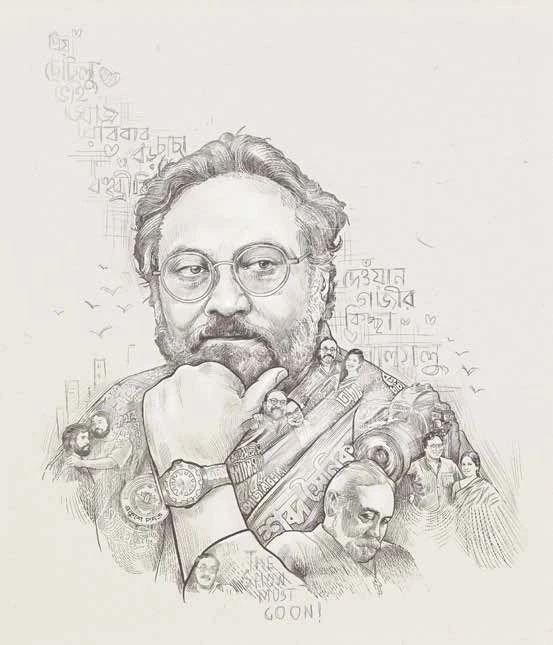
A commemorative montage combining portraiture, handwritten Bengali text, narrative fragments and fine linework.
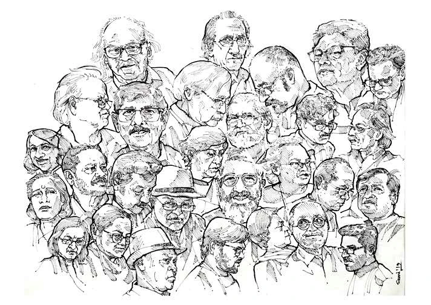
A dense ensemble of faces turns portrait drawing into a collective document of community and shared cultural presence.
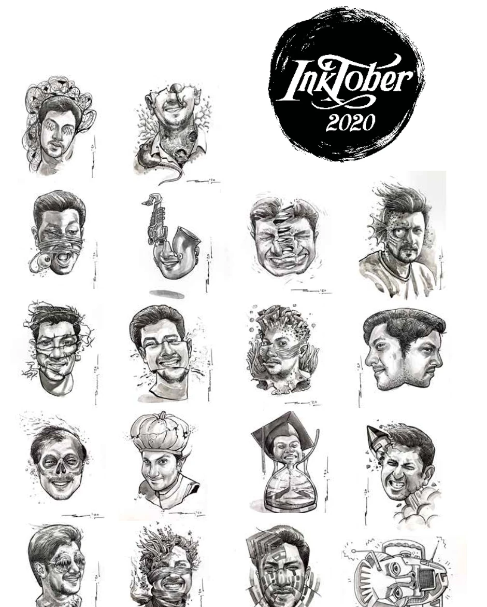
Ink-based character experiments exploring portraiture, surreal distortion, graphic invention and disciplined mark-making.
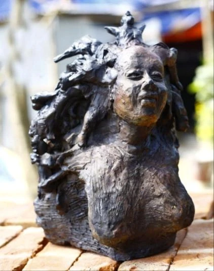
A bronze female bust emerging from an organic textured mass, framing freedom as resilience and becoming visible.
03 · Exhibitions & Achievements
Selected artist participation, workshops and cross-cultural programmes from 2016 to 2025, alongside national competition achievements.
04 · Curriculum Vitae
A professional history spanning creative leadership, art direction, visualisation, illustration, print production, teaching and exhibition activity.
Multimedia University (MMU), Cyberjaya, Malaysia
Shanto-Mariam University of Creative Technology, Dhaka
Gazipur Govt. Mohila College
Rani Bilashmoni Govt. Boys High School
Sfor.STUDIO Limited · London, UK
Leads a London-based creative studio, combining artistic direction, design development and client-facing creative production.
Pitzhanger Manor & Gallery · Ealing, London, UK
Supports the public-facing work of a historic house and gallery environment, contributing to visitor engagement and cultural activity.
Eazy Printers · Brick Lane, London, UK
Coordinates production workflow and day-to-day print operations, supporting quality, team organisation and delivery.
Print Art for U · London, UK
Contributed to artistic installations and visual production for institutions including Elizabeth School of London and Victoria College of Arts and Design.
Astatic MCL · Dhaka, Bangladesh
Produced visual presentations and campaign assets for clients including 7UP, Samsung, Nestlé, Airtel and Grameenphone.
Art Bangla Foundation · Dhaka, Bangladesh
Helped organise national and international art-festival activity over consecutive years and supported artistic direction and event coordination.
BRAC · Dhaka, Bangladesh
Created custom illustrations for educational and promotional materials, translating complex ideas into accessible and engaging visuals.
NVisio Solutions · Dhanmondi, Dhaka
Produced commissioned illustration work within a design and communication setting.
Foodpanda & Blues · Dhaka, Bangladesh
Delivered live caricature work for an event-based commission.
Vimrul LTD · Banani, Dhaka
Part-time graphic-design role spanning print and digital communication.
Brahmanbaria Shishu Nattom · Brahmanbaria, Bangladesh
Taught art on a part-time basis, supporting long-term creative learning and visual skill development.
BINEX; CITAS College Dublin; STEP Communications; TEM Sports & Events; OscilloSoft Pty Ltd; Dreamers & Doers; Priority Edit & Effects
Positions included Assistant Manager (Creative), Senior Visualizer, Senior Graphic Designer, Graphic Designer and Junior Graphic Designer across Bangladesh, Ireland and remote international work.
Additional supplied curatorial / leadership roles
Artist-profile materials also list Creative Director at the National Sculpture Gallery and Founder & Director of Women Venture BD, alongside international exhibition-organising activity (2022 – Present, as supplied).
05 · Capabilities
Studio practice and applied design capabilities supported by production, leadership and communication experience.
06 · Contact
For exhibition opportunities, illustration, design, art direction, commissioned work or professional collaboration, contact Imrooz Shimu directly.
Visual Artist · Designer · Illustrator · Art Director · Exhibition Organiser